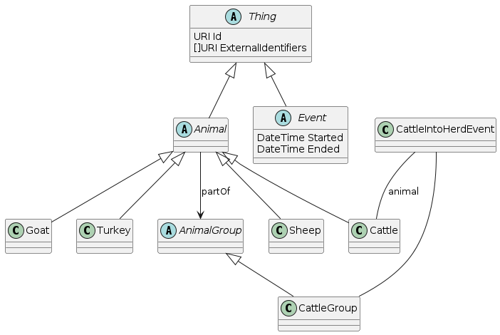

A logical and semantic information model that describes the core entities, relationships and events for livestock.
Defining a semantic information model with concrete syntax based on international standards will improve the quality and timeliness of data exchange in agriculture. These improvements in inter-system communication leads to lower costs of integration, solutions of higher accuracy and the opportunity to create more value for farmers and industry partners.
This specification is uses a common approach to modelling and representing different aspects of livestock agriculture. The specification is divided into the following sections, Animal Sale & Purchase, Animal Feeding, Animal Health, Animal Reproduction, Animal Slaughter, Animal Milking Events. Each of these sections defines a set of events related to the specific aspect of livestock agriculture. These events utilise core entities that are defined in the Core Entities section. Each section defines the event as a logical information model, with text and diagrams, and then provides the RDF and SHACL representation of the event. Controlled vocabularies are used to define some of the values of the properties belonging to entities and events. These are also defined in a common section called vocabulary.
The following entities are used in the specification and are defined in the Core Entities section.
A commercial organisation is a business entity that is involved in the buying and selling of goods and services.
Uniquely identified by http://data.opsl.no/laim/CommercialOrganisation.
@prefix rdf: <http://www.w3.org/1999/02/22-rdf-syntax-ns#> .
@prefix rdfs: <http://www.w3.org/2000/01/rdf-schema#> .
@prefix xsd: <http://www.w3.org/2001/XMLSchema#> .
@prefix schema: <http://schema.org/> .
@prefix laim: <http://data.opsl.no/laim/> .
laim:CommercialOrganisation a rdfs:Class ;
rdfs:label "Commercial Organisation" ;
rdfs:comment "A business entity that is involved in the buying and selling of goods and services." ;
laim:externalIdentifier a rdf:Property ;
rdfs:label "External Identifier" ;
rdfs:comment "An external identifier for the organisation." ;
rdfs:domain lami:CommercialOrganisation ;
rdfs:range xsd:string ;
rdfs:subPropertyOf schema:identifier ;
@prefix rdf: <http://www.w3.org/1999/02/22-rdf-syntax-ns#> .
@prefix rdfs: <http://www.w3.org/2000/01/rdf-schema#> .
@prefix xsd: <http://www.w3.org/2001/XMLSchema#> .
@prefix schema: <http://schema.org/> .
@prefix laim: <http://data.opsl.no/laim/> .
laim:CommercialOrganisationShape a sh:NodeShape ;
sh:targetClass laim:CommercialOrganisation ;
sh:property [
sh:path lami:externalIdentifier ;
sh:datatype xsd:string ;
sh:minCount 0 ;
# no maxCount
] ;
A single person commercial organisation is a business entity that is owned and operated by a single person.
An animal is a living organism that feeds on organic matter, typically having specialized sense organs and nervous system and able to respond rapidly to stimuli.

An animal group is a collection of animals that are managed together.
Cattle is a subclass of Animal, Bos taurus, a domesticated bovine primarily animal kept for milk or meat.
Cattle Group is a subclass of Animal Group, a group of cattle that are managed together.
Sheep is a subclass of Animal, Ovis aries, a domesticated ruminant animal with a thick woolly coat. Primarily kept for wool and meat production.
Goat is a subclass of Animal, Capra aegagrus hircus, a domesticated ruminant animal with a thick woolly coat. Used for meat and milk production.
Pig is a subclass of Animal, Sus scrofa domesticus, a domesticated mammal with a stout body, cloven hooves, and a short tail. Used for meat production.
Turkeyy is a subclass of Animal, domesticated birds kept for their meat.
Chicken is a subclass of Animal, domesticated birds kept for their meat and eggs.
Duck is a subclass of Animal, domesticated birds kept for their meat and eggs.
An event that transfers an animal into a herd.
Preconditions: Given Group G, sum hop (?animal-(partOfGroup)->G) = 0.
Postconditions: Given Group G, sum hop (?animal-(partOfGroup)->G) = 1.
The following are the possible reasons for an animal being transferred into a herd.
This is required for specifications that contain normative material.